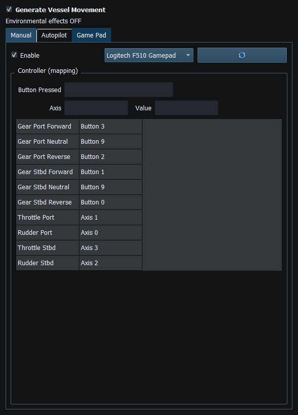

Game Controller Mode
Game Pad mode uses compatible SDL2 controller input to drive the local Vessel Movement controls. It does not send hardware helm commands directly.
Connect and select a gamepad
- Connect the physical USB/Bluetooth controller. SDL2 must recognize it as a mapped game controller; an unmapped joystick may not appear.
- Open Vessel Movement → Game Pad. Press the refresh icon, select the intended device, then check Enable on this tab. Refresh stops enabled input; re-enable deliberately afterward.
- Stop Autopilot first; it cannot operate with Game Pad enabled. Center both sticks and release all buttons after enabling. Input arms only after the controller reports neutral.
- Check Axis / Value and Button feedback while moving one control gently. The table uses SDL normalized axes/buttons, not arbitrary joystick numbering. There is no in-app remapping editor; other devices require a valid SDL mapping.
Steering, throttle and gears
| SDL control | Local action |
|---|
| Left X / axis 0 | Port/shared rudder |
| Right X / axis 2 | Starboard/shared rudder |
| Left Y / axis 1 | Port throttle: push up to raise latched throttle; pull down to reduce it |
| Right Y / axis 3 | Starboard throttle when Sync Throttle is off |
| A / 0; B / 1 | Starboard Reverse; Forward |
| X / 2; Y / 3 | Port Reverse; Forward |
| Left stick click / 9 | Both transmissions Neutral |
Sticks have a dead zone. Releasing the throttle stick retains its last throttle value; it does not spring back to zero throttle. Sync Throttle links port changes to starboard. Independent twin-engine mode uses both throttles and the average rudder command. A shared helm uses the active stick without a centered stick cancelling it; two nonzero commands are averaged. Printed device labels can differ from SDL A/B/X/Y.
Drive a virtual vessel locally
- In Setup review starting latitude/longitude, engine count, speed/engine profiles and transmissions. Use a separate Layout for your driving session. Required engine profiles must be valid before movement can start.
- Enable the Vessel Movement generator, keeping external Sending stopped. Enable Game Pad, neutralize controls, then on the Manual tab enable Manual Movement. Game Pad changes Manual controls; enabling it alone does not start movement integration.
- Select Forward for the configured engines, then gently raise throttle. Neutral produces no commanded drive; Reverse changes travel direction. Rudder changes heading; throttle/gear and the vessel/engine model change speed. Position advances as the simulation runs. Configured environmental influence can make course over ground differ from heading.
- To update instruments, use compatible Vessel Movement bindings and enable generator Dispatch. Observe Position (129025 or GGA/RMC), COG/SOG (129026 or RMC/VTG), and Heading (127250 or HDT/HDG) as appropriate. A generator's presence does not bind every possible instrument.
- Stop local movement by unchecking Manual Movement or disabling Game Pad. Disabling Game Pad stops Manual movement and resets throttle, rudder and gears. Disconnect also stops/resets controls; reconnection never resumes automatically.
Example: observe the vessel in OpenCPN
To view simulated movement in OpenCPN, configure a compatible NMEA connection, enable the required position/navigation instruments and explicitly enable Sending. Use an isolated test connection. This serial example uses different endpoints for the simulator and OpenCPN.
- Prepare a paired serial link or correctly wired NMEA0183 output-to-input interface. The simulator opens one endpoint and OpenCPN the other; they must not compete for the same port. No generic NMEA0183 TCP/UDP server is built into this application.
- In simulator Setup enable/configure NMEA0183 with its output endpoint and baud rate. In OpenCPN Options → Connections add/enable a Serial NMEA0183 Input using the receiving endpoint and matching baud rate. Keep OpenCPN output disabled for this observation example.
- In Generate configure valid GGA and RMC instruments (VTG/HDT optional), individual Enable/reporting intervals, compatible Vessel Movement bindings and Dispatch. Configure valid fix/status/time fields as well as position; chart software can ignore an invalid fix.
- Start local Manual/Game Pad movement. When the output and instruments are ready, explicitly choose Enable Sending. Check simulator Sending status and OpenCPN's NMEA input/debug view, then observe position/course/speed. Connecting or enabling a gamepad alone transmits nothing.
- Stop Sending / F12 revokes external output. Separately stop Manual/Game Pad movement: F12 is not a local-motion stop. Disconnect the test output afterward.
A compatible NMEA2000 chartplotter can instead receive supported position/heading/speed PGNs over a ready supported transport on an isolated test backbone. Match expected references and selected source. Actisense Release is RX-only. Gateways must match the receiver's protocol; RayNetworkBridge is not an OpenCPN NMEA0183 network socket.
Optional external reference: OpenCPN Connections manual. For route following, see Watch a route in OpenCPN.
Safe stop
Use one movement mode intentionally. If values are unexpected, press F12, stop Manual/Game Pad, inspect neutral controls, then refresh/reselect and re-enable deliberately. F12 revokes external Sending and separately authorized requests without granting permission to restart.
Controller absent or mapping unexpected
If None Found appears, check the connection and SDL mapping, then Refresh. If direction/buttons differ, stop local movement and inspect the mapping and live feedback before enabling it again.
Illustrated controls

Figure 44. Select the controller and enable Game Pad. Axis, Value and Button feedback show the mapped inputs. Click to enlarge.
Generating NMEA Data · Enable, Dispatch and Sending · Manual Vessel Movement · Autopilot and Route Following · Engine and Transmission Simulation · Weather and Environmental Simulation · AIS Simulation · Windlass Simulation · Connection Troubleshooting · Route Overview · Engineering Units
Help Home · Back to top